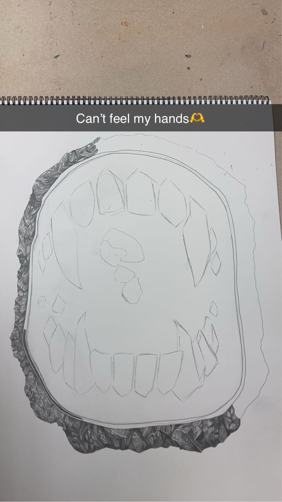
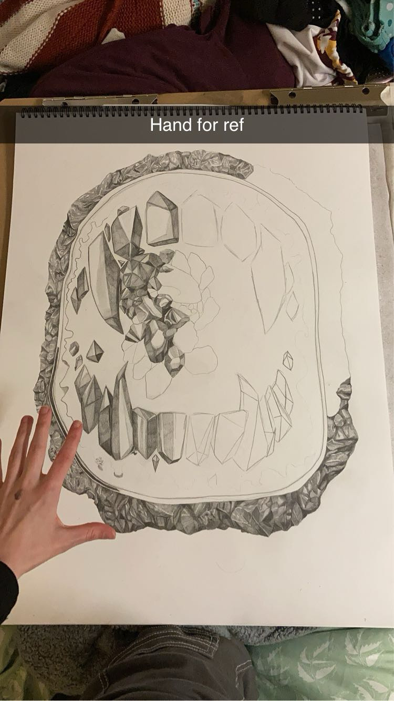
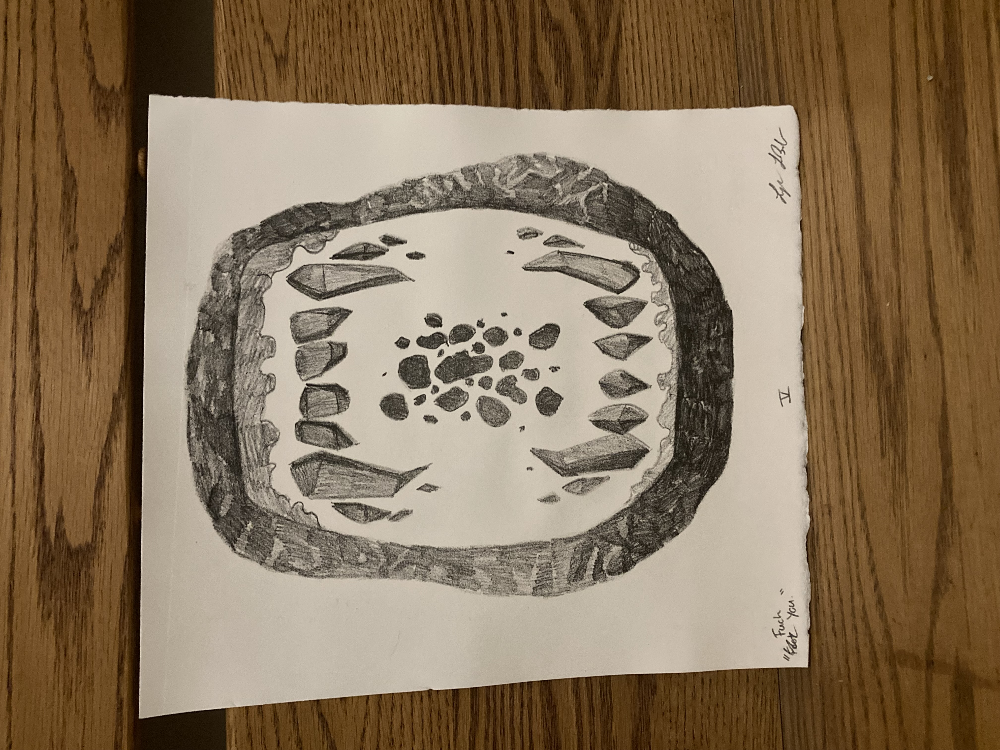

"Fool Me Once"
April, 2024
This piece was a multi-print project, which featured a large sketch on 24 x 18 inch paper.
The sketch was then simplified and made into a lithography print, with 5 editions in total.
This piece was impired by the unfortunate situation some individuals face when
they are fooled by a person they trust. The multiple prints were titled individually
to express the frustration in the repeating patterns of toxic behavior.
Process Photos


